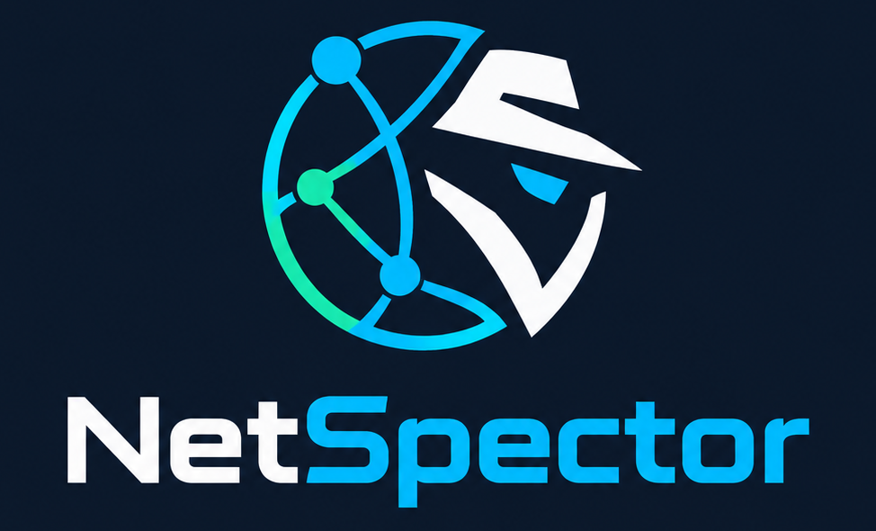

Informe de auditoría de seguridad de un equipo
Servicios, configuración y vulnerabilidades — Plantilla con guía de cumplimentación · Versión 1.0

Puedes hacer clic sobre cualquier celda de texto para editarla directamente antes de imprimir o guardar el informe.
1. Datos generales del informe
| Campo | Qué escribir |
|---|---|
| Título del informe | Auditoría de Seguridad |
| Código / referencia | AUD-2026-10-26-0 |
| Fecha de la auditoría | 26/10/2026 |
| Auditor | No verificado |
| Solicitante / responsable del activo | No verificado |
| Versión y estado | V1.0 - Revisado |
| Nivel de confidencialidad | Confidencial |
2. Alcance y autorización
| Campo | Qué escribir |
|---|---|
| Activo evaluado | Infraestructura Evaluada |
| Elementos fuera de alcance | No verificado |
| Tipo de análisis | Caja blanca |
| Autorización | Autorizado |
3. Identificación del equipo
| Campo | Qué escribir |
|---|---|
| Nombre de host | No verificado |
| Direccion IP / MAC | No verificado |
| Sistema operativo y versión | No verificado |
| Versión del kernel | No verificado |
| Tipo de equipo | Servidor |
| Función / criticidad | Servidor de infraestructura |
| Propietario | No verificado |
| Última fecha de arranque | No verificado |
4. Inventario de servicios y puertos
| Puerto / protocolo | Servicio | Software y versión | Proceso / usuario | Accesible desde | ¿Necesario? | Observaciones |
|---|---|---|---|---|---|---|
| Sin datos de puertos. Carga archivos nmap.txt o ss.txt para rellenar automáticamente. | ||||||
5. Revisión de configuración
5.1 Cuentas y autenticación
| Control | Cómo comprobarlo | Valor encontrado | Estado |
|---|
5.2 Red y cortafuegos
| Control | Cómo comprobarlo | Valor encontrado | Estado |
|---|
5.3 Sistema de archivos y permisos
| Control | Cómo comprobarlo | Valor encontrado | Estado |
|---|
5.4 Actualizaciones y parches
| Control | Cómo comprobarlo | Valor encontrado | Estado |
|---|
5.5 Registro, auditoría y copias de seguridad
| Control | Cómo comprobarlo | Valor encontrado | Estado |
|---|
5.6 Servicios concretos (ejemplo: servidor web)
| Control | Cómo comprobarlo | Valor encontrado | Estado |
|---|
6. Vulnerabilidades detectadas
Ficha de vulnerabilidad (repetir una por hallazgo)
Tabla resumen de vulnerabilidades
| ID | Título | Componente | Severidad | Estado | Prioridad de corrección |
|---|---|---|---|---|---|
| Sin vulnerabilidades cargadas. | |||||
7. Resumen ejecutivo y valoración global
| Severidad | Nº de hallazgos |
|---|---|
| Crítica | 0 |
| Alta | 0 |
| Media | 0 |
| Baja | 0 |
| Informativa | 0 |
Informe técnico de auditoría de seguridad conforme a la plantilla oficial de 10 secciones.
8. Plan de remediación y recomendaciones
| Prioridad | Hallazgo relacionado | Acción recomendada | Mitigación temporal | Responsable | Fecha límite | Esfuerzo | Estado |
|---|---|---|---|---|---|---|---|
| Sin plan de remediación definido. | |||||||
9. Metodología y herramientas utilizadas
| Herramienta | Versión | Uso | Comando o perfil | Fecha y hora |
|---|---|---|---|---|
| Sin herramientas registradas. | ||||
10. Anexos, evidencias y firmas
Índice de anexos y evidencias
| Anexo | Contenido | Relacionado con |
|---|---|---|
| Sin evidencias adjuntas. | ||
Control de versiones
| Versión | Fecha | Autor | Cambios |
|---|---|---|---|
| V1.0 | 26/10/2026 | Auditor | Versión inicial de auditoría |
| V1.0 - Revisado | 26/10/2026 | Auditor | Revisión técnica de evidencias y plan |
Firmas
| Rol | Nombre | Fecha | Firma |
|---|---|---|---|
| Auditor | No verificado | 26/10/2026 | No verificado |
| Responsable del activo | No verificado | No verificado | No verificado |
| Revisor / Dirección | No verificado | No verificado | No verificado |
¿Te ha servido la herramienta NetSpector para tu informe?